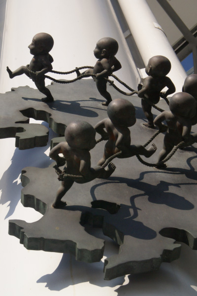

薮内 佐斗司

『縁結び七福童子』は「せんとくん」の作者で彫刻家の薮内佐斗司氏の作品。「ＪＲ九
州７県が手を携えてやって行きましょう」と願いを込めて作ったそうだ。博多駅には薮
内氏の同名同形の作品が屋上の「つばめの杜ひろば」にも設置。より間近で同じ作品を
鑑賞できる。また、駅前にはマニアに知られているる隠れキャラ「金のカエル」もいる
そう。博多口の面の壁や柱を注意深く探すと、見つけることが出来るかもしれない。
」